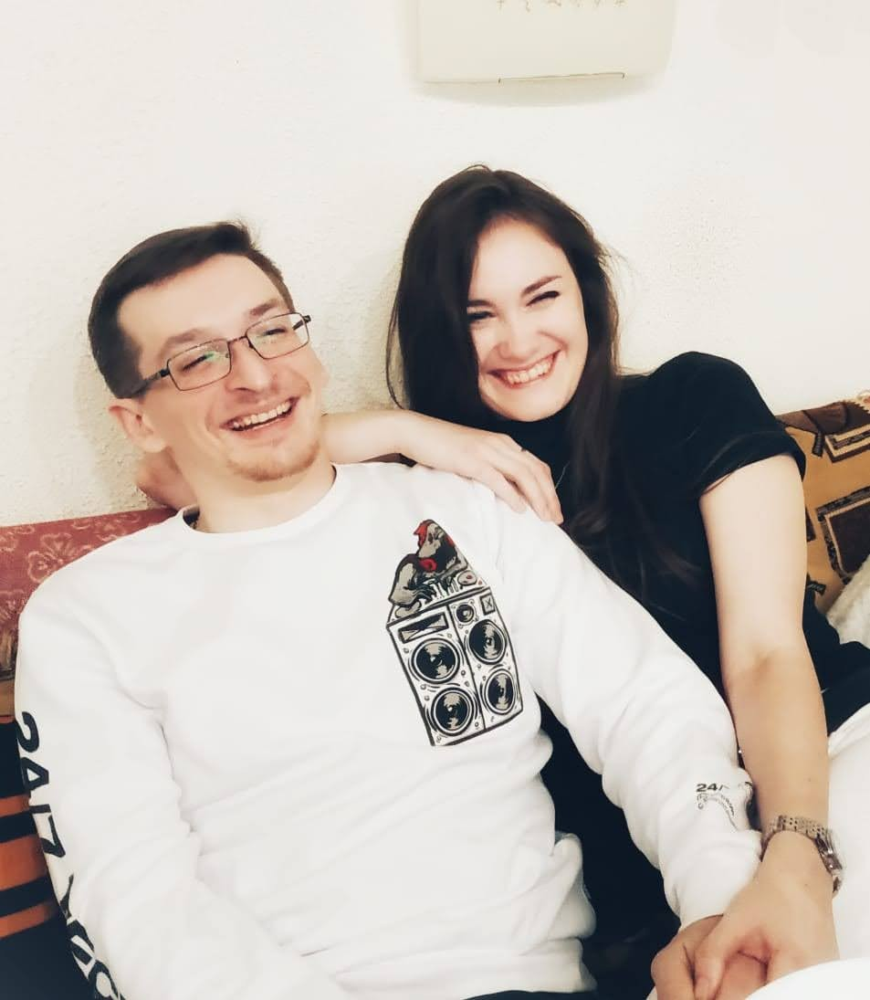
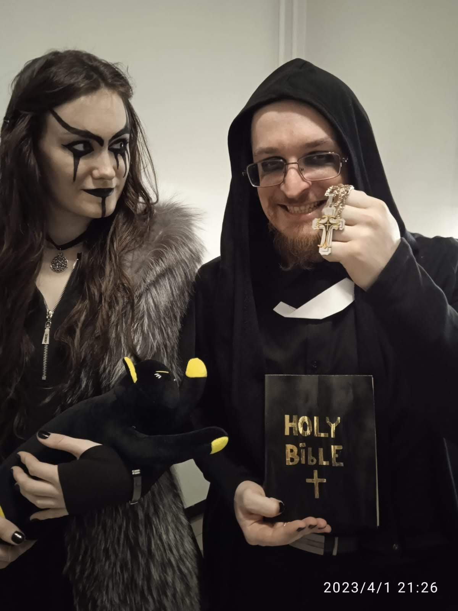

РосАстроКаталог Небесных Тел · РАК · 27-α-ОФИ · 2021
Рас Альхаг
α Змееносца · Двойная звезда · 48.56 св. лет
✦ ✦ ✦
Как это началось
Она — из Магнитогорска. Он — из Москвы.
Шанс встретиться был ничтожно мал.
Но 27 мая они встретились, соединив сердца вопреки теории вероятностей.
И гравитация сделала всё остальное.
Шанс встретиться был ничтожно мал.
Но 27 мая они встретились, соединив сердца вопреки теории вероятностей.
И гравитация сделала всё остальное.
Наши фото

У родителей · 2020 год
Первая поездка в Магнитогорск

На день рождения в тематических костюмах
Наша свадьба · 27.12.2021
13 мая 2021 · 10 000 метров
Рейс Магнитогорск — Москва.
В кармане — кольцо. Не купленное.
Сделанное своими руками на тайном мастер-классе.
Тринадцатое. Четверг. Не пятница — но всё равно
против суеверий. Как всегда.
В кармане — кольцо. Не купленное.
Сделанное своими руками на тайном мастер-классе.
Тринадцатое. Четверг. Не пятница — но всё равно
против суеверий. Как всегда.
13 мая 2021 · Рейс Магнитогорск — Москва · На высоте 10 000 метров ✦
Созвездие Змееносца в атласе
13-е созвездие, не подчинившееся зодиакальному кругу.
В его главе кружат в общем танце две сферы — твоя звезда Рас Альхаг.
В его главе кружат в общем танце две сферы — твоя звезда Рас Альхаг.

Созвездие Змееносца (Stellarium)

Рас Альхаг — оптический фокус ×500
Наша константа
27 · 05
ВстретилисьМосква ↔ Магнитогорск
13 · 05 · 2021
Предложение на высоте 10 000 мКольцо ручной работы. Четверг, 13-е.
27 · 11
День рождения Юлии(и почти — Антона)
27 · 12 · 2021
СвадьбаНаша годовщина
27 · 06
Забрал из роддомаНас стало трое
Наши моменты
✦Место для фото
✦Место для фото
✦Место для фото
✦Место для фото
✦Место для фото
✦Место для фото
Говорят, мы несовместимы.
Говорят, звёзды предрекают нам разное.
Пусть звёзды бессильно освещают наш счастливый путь —
им не дано указывать, что нам уготовано.
Антон & Юлия · с 27.05 навсегда